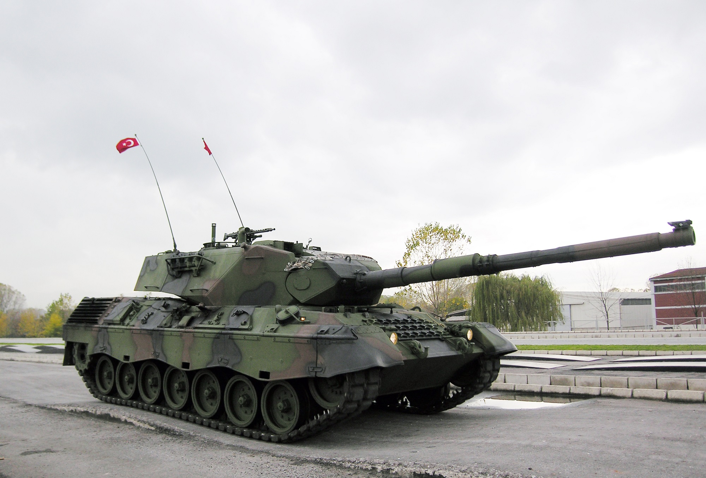

Njemačka u Hladnom ratu
Početak projekta novog srednjeg tenka Standard-Panzer veže se za novembar 1956. godine, koji bi zamijenio tadašnje srednje tenkove američke proizvodnje M47 Patton i M48 Patton koji su se tada nalazili u upotrebi. I njemačke vojske. Iako nisu davno isporučeni, ovi tenkovi su brzo zastarjeli. 25. jula 1957. godine objavljene su detaljne specifikacije, novi tenk ne bi trebao biti teži od 30 tona, odnos snage i težine 30 KS/t, oklop tenka je trebao izdržati brzu paljnu do kalibra 20 mm sa svih strana vozila, trebao je imati sposobnost djelovanja na bojnom polju koje bi bilo hemijski i radioaktivno zagađeno, te sa standardnom osnovom za borbu protiv Varšavskog pakta. Pored toga glavno naoružanje je trebao predstavljati top kalibra 105 mm (odabran je tada novi britanski top L7A3 105 mm) sa kapacitetom spremnika municije kao i kod tadašnjih američkih tenkova. Mobilnost tenka je stavljena kao prioritet, nekon koje je dolazilo naoružanje, oklop je smatran manje bitnim, jer je smatrano da nije bilo moguće izgraditi dovoljnu zaštitu tenka od kumulativnih zrna.
Standard je moje srednje ime...
Leopard I - Leopard 1 je bio njemački glavni borbeni tenk koji je ušao u službu 1965. godine. Osim Njemačke, glavni borbeni tenk bio je i u Australiji, Grčkoj, Italiji, Kanadi i u još nekoliko europskih i južno američkih država. Glavno naoružanje čini njemačka verzija britanskog L7 105 mm topa. Leopard 1 poznat je po svojim dobrim terenskim sposobnosti i velikoj maksimalnoj brzine po teškim terenima.
